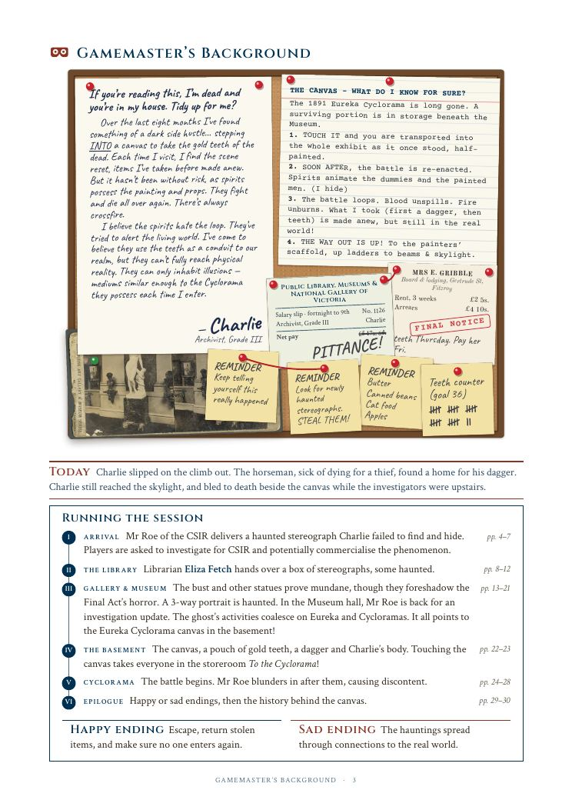
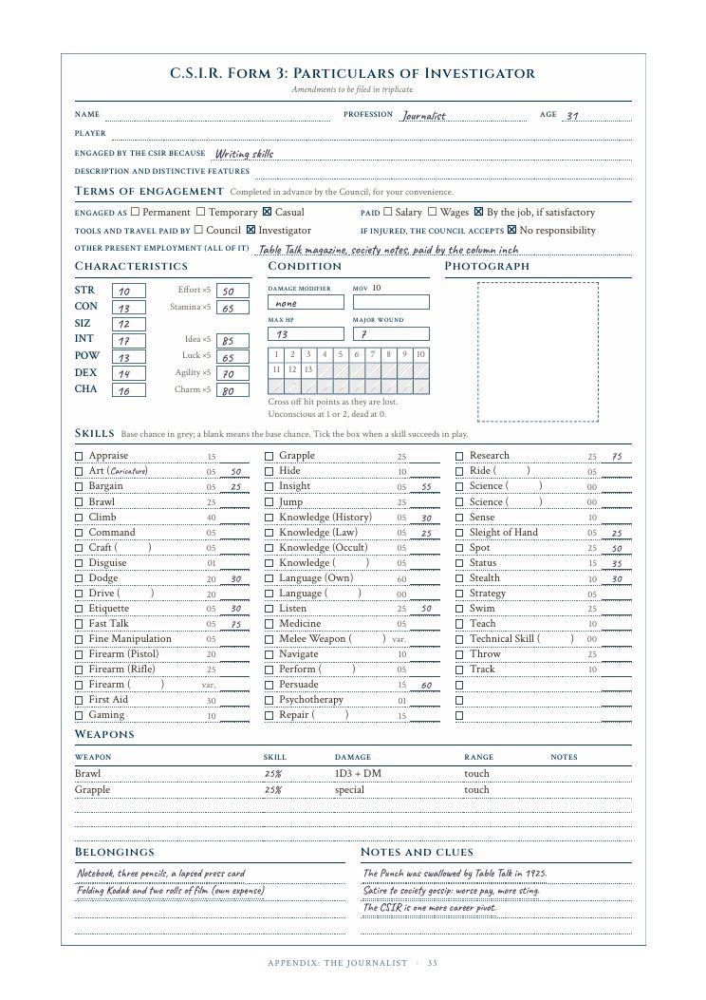
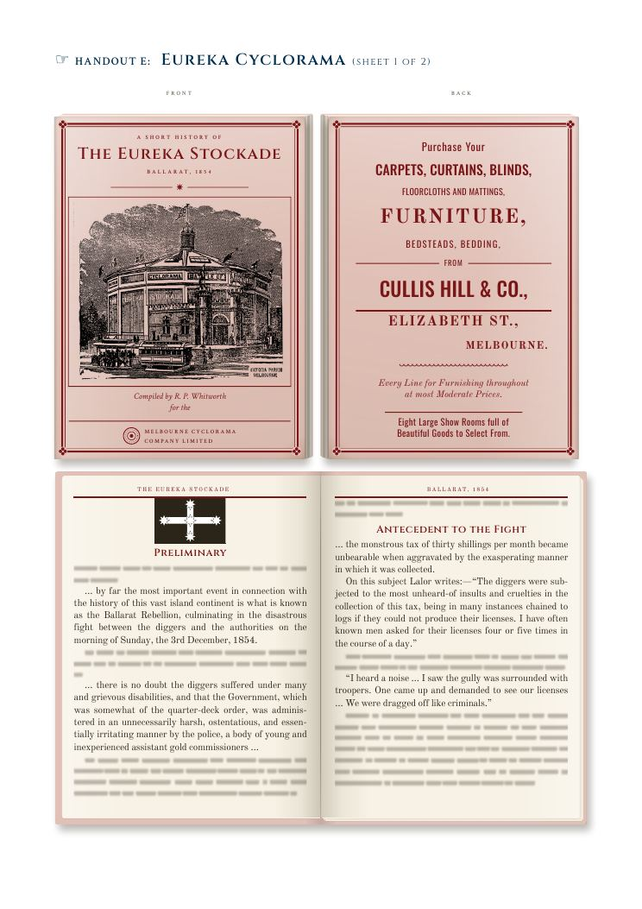

✦ What's Inside ✦
Everything you need for one evening
Written for gamemasters who want to run it the same week they buy it.






- Basic Roleplaying quick reference, with a guide for D&D players
- Manifestation Table for every haunted room
- Make your own stereoscope
- Two optional busker's ballads about the founding of the CSIR
- Historical epilogue and further reading
- Links to ultra-high-resolution source images